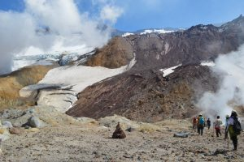
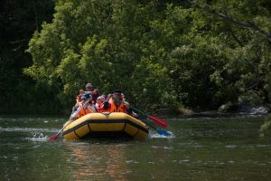
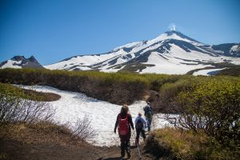
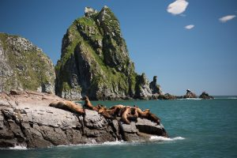

Home > Туры > Тур “Красота Камчатки без палаток”
Тур “Красота Камчатки без палаток”

Красота Камчатки привлекает множество людей, но не все готовы к тяготам путешествия подевственным местам, когда надо спать в палатках, долго ходить пешком по горам, таскать на себе тяжелый рюкзак и т.п. Подобная романтика привлекает, в основном, подготовленных к ней людей.
Тех же, кто предпочитает знакомство с природными красотами, ночуя при этом в комфортабельных условиях, приглашаем на тур «Топ-5 мест без палаток».
Участники такого путешествия знакомятся с самыми впечатляющими местами Камчатки, но при этом им не нужно прилагать больших физических усилий, чтобы их увидеть.
Туристов ждут восхождения на Авачинский и Мутновский вулканы, они увидят также Курильское озеро (или Долину гейзеров, по желанию, за отдельную плату), добравшись туда на вертолете. С высоты можно будет полюбоваться и животным миром Камчатки, особенно ее знаменитыми медведями, которые довольно свободно гуляют по просторам полуострова.
Жизнь морских животных туристы смогут наблюдать во время десятичасовой прогулки на катере в бухту Русская.
Все время туристов сопровождает профессиональный гид, который знает о Камчатке практически все и умеет рассказывать о ее остопримечательностях увлеченно и содержательно.
Краткая программа тура:
- Первый день – размещение на базе отдыха
- Второй день – поездка к вулкану Мутновский
- Первый день – размещение на базе отдыха
- Третий день – Сплав по реке Быстрая
- Четвертый день – восхождение на Авачинский вулкан
- Пятый день – Морская прогулка
Стоимость тура: 81 000 руб.
Полное описание тура:
Первый день – размещение на базе отдыха
Гости прибывают в аэропорт Петропавловска-Камчатского, где их уже ждет с табличкой наш гид. Он везет туристов в гостиницу. Смена часовых поясов, непривычный климат требуют хотя бы суточной акклиматизации, поэтому в день приезда никаких мероприятий не проводится. Гости отдыхают, купаются в бассейне с термальной водой, ужинают, постепенно адаптируясь к дальневосточным реалиям.
Второй день – поездка к вулкану Мутновский
Начало содержательной части тура посвящено восхождению к кратеру вулкана Мутновский. Эта сопка находится не так далеко от Петропавловска-Камчатского и является популярным туристическим объектом. Вместе с вулканами Вилючинский, Горелый и Асача, Мутновский образует единый впечатляющий массив. Восхождение на вулкан проходит по маршруту, неоднократно пройденному разными людьми. Он не сложен и доступен даже детям. Впечатления остаются надолго. Мутновский живет своей вулканической жизнью, и ее различные проявления доступны для обзора.
Туристы ощутят в воздухе запах серы, увидят воочию вырывающиеся из-под земли клубы пара и дыма, а, добравшись до кратера, полюбуются образовавшимся в нем ледником. По горе стекает вниз река Вулканная, которая неудержимо бежит по ущелью и падает с отвесных круч, образуя впечатляющий водопад высотой 80 метров. Чистейшая вода с шумом и брызгами стремится в долину, где сольется с более крупным водоемом.
Темп восхождения удобен для всех, так что даже люди, не особо подготовленные физически, в состоянии добраться до нужной высоты и полюбоваться открывающимися видами. К вечеру группа возвращается в отель.
Третий день – Сплав по реке Быстрая
Этот день посвящен водному путешествию. Протекающая по Камчатке река Большая имеет приток – речку Быструю, протяженность которой 270 метров. Она славится своим интересным рельефом и привлекает любителей рафтинга. Профессионалы выбирают наиболее сложные и бурные участки, но нашим гостям мы предлагаем спокойный сплав, сопряженный с рыбалкой.
Оснащение мы полностью берем на себя. Туристы, предварительно пройдя инструктаж и облачившись в спасательные жилеты, садятся в надувные рафты, за веслами – наши опытные инструктора-гиды. Они направляют лодки по водной глади на небольшой скорости, чтобы путешественники могли спокойно полюбоваться открывающимся великолепным пейзажем, заметить животных, успеть все сфотографировать. Бассейн Быстрой знаменит как место нереста лососевых. Миллионы ценных рыб заходят сюда каждый сезон, чтобы оставить после себя потомство.
Начало маршрута – поселок Малки, конец – лиман реки Большая. Весь путь проходит в окружении дикой природы. Этот участок прекрасно подходит для рыбалки, так что туристы, вооружившись удочками, могут поймать отличную рыбу. Все лето здесь много гольца, в июне и июле хорошо ловится чавыча, но особенно богат на улов август – на крючок идут микижа, форель, хариус, кижуч.
Дальневосточная рыбалка никого не оставляет равнодушным.
Во время водного путешествия следует помнить, что любая техническая аппаратура боится влаги, поэтому лучше обзавестись мини-гермомешками, в которых будет храниться фотоаппарат или видеокамера. После плодотворно проведенного дня туристы возвращаются в отель.
Четвертый день – восхождение на Авачинский вулкан
Этот день посвящен Авачинскому вулкану. Туристы совершают восхождение на его вершину.
Маршрут сложнее, чем на подъем на Мутновский, и занимает больше времени, поэтому надо хорошо подготовиться. После раннего подъема и завтрака в семь утра группа выезжает в направлении Авачинской сопки. Она возникла более десятка тысяч лет назад в результате мощнейшего извержения, который разнес вершину старого вулкана, находившегося тут ранее. Огромная котловина, образовавшаяся на месте взорвавшейся вершины (кальдера) стала основанием нового конуса, который и стал Авачинским вулканом.
Восхождение на его вершину не требует профессиональных навыков и специального альпинистского снаряжения. Для туристов подобран самый щадящий маршрут, но и он непростой. Тем не менее, гид выбирает наиболее оптимальные пути и ту скорость, которая подойдет всем участникам похода, включая пожилых людей. Поднимаясь все выше, туристы видят поразительную панораму, в том числе вид на береговую линию Тихого океана, на Петропавловск-Камчатский. Но главное – все ближе становятся вершины соседних гор.
Добравшись до цели (на это уходит 5-6 часов), туристы обозревают кратер вулкана. Такое зрелище невозможно забыть за всю свою жизнь. Ради этого стоит преодолеть склоны Авачи.
Деятельность вулкана предстает во всей красе. В центре кратера находится застывшая лава, создающая фантастические очертания. На склонах дымят фумаролы.
После отдыха и перекуса путешественники начинают спуск. Он проходит легче, чем подъем, но надо иметь в виду, что мелкий шлак, по которому приходится идти, может забиться в обувь и натирать ноги. Поэтому надо быть обутым правильно, иметь высокие гетры. После спуска туристы садятся в машины и едут на ночевку на базу отдыха.
Пятый день – Морская прогулка
Туристы совершают морской круиз по Авачинской бухте с посещением острова Старичков и бухты Русской. Это путешествие займет около 10 часов, в течение которых участники тура увидят потрясающие картины природы. Выходя из Авачинской бухты на катере, можно любоваться горным пейзажем с нового ракурса, со стороны моря. Невозможно не обратить внимание на скалы «Три брата», которые, как стражи, стоят у входа в бухту. С ними связана древняя легенда, о которой непременно расскажет гид.
Над бухтой летают птицы, которые выхватывают рыбу прямо из воды. Чем ближе к острову Старичков, тем больше разных пернатых, а на самом острове – их шумная резиденция. Это заповедная территория, где располагаются птичьи базары и лежбища ластоногих. Любоваться животными можно только издали, высадка на остров запрещена. Посмотреть на лежбища сивуча и секача можно также на мысе Кекурный, мимо которого катер проходит на пути к бухте Русская.
Эта бухта раньше по-ительменски называлась Ахомен. Переименовали ее в 1952 году. Ее особенность – в очень удобном расположении и защищенности, что делает ее надежным пристанищем для кораблей. Еще в XVIII веке здесь от шторма прятались парусники. В годы Второй мировой войны в этой бухте располагалась морская база. Помимо стратегического значения бухта имеет и просто эстетическую значимость. Это одно из красивейших мест Камчатки. Находясь тут, люди воистину испытывают катарсис. Прямо над бухтой располагается озеро с большим содержанием серебра в воде – еще один уникальный штрих в палитру камчатской природы.
В районе бухты иногда можно увидеть китов и касаток, которые подплывают достаточно близко, чтобы их плавники были заметны над водой. А когда эти гиганты начинают кувыркаться, подобное зрелище невозможно забыть.
В бухте прекрасная рыбалка. Мы оснащаем туристов необходимыми снастями, и они сами ловят рыбу на ужин, и после поедания вкусной ухи и отдыха возвращаются обратно в Петропавловск-Камчатский.
Шестой день – опциональные экскурсии за дополнительную плату.
В предпоследний день перед завершением тура гостям на выбор предлагается два маршрута:
экскурсия в Долину гейзеров с посещением вулкана Узон и термальных источников Налычево (дополнительно надо заплатить 44 000 руб.), а также экскурсия на вулкана Ксудач и Ходуткинских термальных вод (стоимость 42 000 руб.). Оба маршрута дальние и предполагают полет на вертолете. Оба предлагают незабываемое зрелище и красивейшие виды.
Трудный выбор.
Про Долину гейзеров слышали, кажется, все. Это памятник природы мирового значения, одно из самых впечатляющий мест на Земле. Расположенная в каньоне в бассейне реки Гейзерная, долина богата разнообразными выходами термальных вод и пара. Здесь есть булькающие грязевые ванны, но больше всего – пульсирующих фонтанов, выстреливающих из недр земли горячую воду. В Долине гейзеров сложилась своя экосистема, которую тщательно изучают ученые. Здесь есть такие организмы и растения, которых больше нигде не встретить. Чтобы не навредить хрупкой природе долины, туристы передвигаются только по специально проложенным тропам.
Полюбовавшись Долиной гейзеров, туристы на вертолете прибывают прямо в кальдеру вулкана Узон. Она имеет в диаметре 10 км и, на первый взгляд, выглядит как равнина. Однако при ближайшем знакомстве открываются всякие чудеса вулканического происхождения – горячие фумаролы, грязевые котлы и красивейшие озера, наполненные водой или кислотой, отчего вода приобретает красивый яркий цвет. Поэтому, находясь в кальдере, надо вести себя очень осторожно.
Здесь тоже сложилась своя экосистема, в которую встроены и животные. Можно увидеть, как мелкие виды, так и лисиц и даже медведей. При встрече с медведем надо создать как можно больше шума, это отпугнет косолапого.
После таких приключений самое время расслабиться и отдохнуть. В природном парке «Налычево» все устроено для этого. Тут есть горячие источники, в которых можно искупаться и получить заряд бодрости. Они имеют также оздоравливающий эффект. После ужина группа возвращается в город, чтобы ночевать в гостинице.
Второй маршрут – на Курильское озеро, столь же интересен, как и первый. Это заповедное место славится своей красотой и тем, что тут всегда можно встретить медведей. Особенно много этих животных в августе, когда начинается большой нерест. В Курильское озеро впадает река Озерная, и ее устье – как раз то место, которое соединяет озеро с океаном, и это единственный путь для нерестящейся рыбы, чтобы добраться до пресной воды. На этом месте находится научно-исследовательская база, специалисты которой изучают рыб и отслеживают процесс нереста. Они охотно знакомят туристов со своей работой и рассказывают о повадках и образе жизни обитающих тут животных.
Покинув берег Курильского озера, путешественники летят к разрушенной взрывом кальдере вулкана Ксудач, облетая по дороге впечатляющие вершины вулканов Карымский и Малый Семячик. В кальдере можно наблюдать несколько кратеров, в одном из них расположилось Горячее озеро, вокруг которого туристы совершают пешую прогулку. Открывающиеся виды неизменно вызывают восторг у каждого, кто их видит. Приятным и расслабляющим завершением дня является посещение Ходуткинских горячих источников, купание в которых восстанавливает силы. После ужина группа возвращается на место ночевки.
Седьмой день – трансфер в аэропорт
Содержательный, разнообразный тур завершается. Мы прощаемся с группой, отвозим наших гостей в аэропорт.
Необходимая информация
Хотя участникам тура не приходится спать в походных условиях, наличие пеших экскурсий, особенно восхождение в горы, и суровая погода, характерная для Камчатки в любое время года, требуют наличия специальной экипировки. В первую очередь, это непромокаемая и непродуваемая верхняя одежда, куртка должна быть с капюшоном. Обязательно нужно иметь термобелье, перчатки, головной убор. Особое внимание следует обратить на обувь. Рекомендованы высокие треккинговые ботинки, немного разношенные. С собой надо иметь небольшой рюкзак для личных вещей и еды.
Аптечка, солнцезащитные очки – нужные аксессуары. Надо взять с собой также солнцезащитный крем для лица и репелленты.
Стоимость тура 81 000 руб.
Обратите внимание, что в шестой день по программе тура можно добавить одну из вертолетных экскурсий в программу, в Долину гейзеров или на Курильское озеро. Стоимость вертолетных экскурсий составляет по 44 000 руб/чел за каждую из них, не включает ваше агентское вознаграждение. Цены за вертолетные экскурсии действительны при внесении 100% оплаты не позднее 20.04.2021. После указанной даты стоимость повысится ориентировочно на 2 000 рублей.
В стоимость включено:
- групповой трансфер по программе
- завтраки на базе отдыха
- обеды на экскурсиях
- проживание на базе отдыха в 2х местных номерах
- экскурсии по программе в группе
- аренда группового снаряжения
В стоимость не включено:
- Перелет до Петропавловска-Камчатского
- Ужины в гостинице (заказываются по меню)
- Страховка (обязательно)
- Вертолетная экскурсия в Долину Гейзеров (Для граждан РФ 46 000 руб, для граждан других стран 46 000 руб.)
- Вертолетная экскурсия на Курильское озеро (Для граждан РФ 46 000 руб, для граждан других стран 46 000 руб.)
Проживание на 2021 год в курортной зоне Паратунка запланировано в гостиничном комплексе “Лагуна” в модульных домиках или в корпусе Вирджиния, в гостинице Спутник, на базе Лесная в зависимости от заезда. В каждом есть душ, туалетная комната и все необходимое. На территории базы есть открытый бассейн с горячей термальной водой и хороший ресторан.